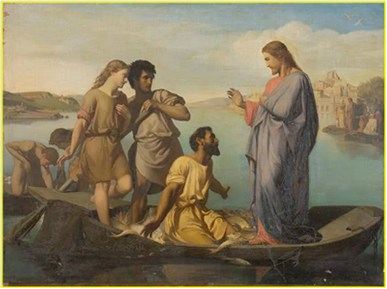
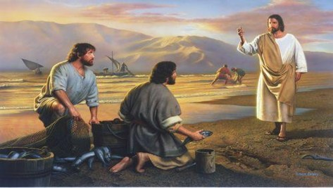
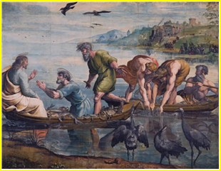
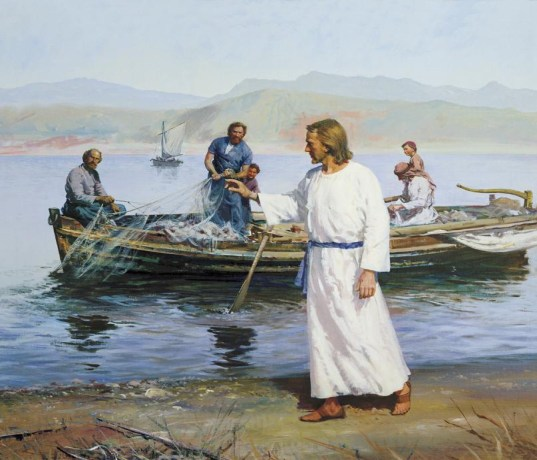
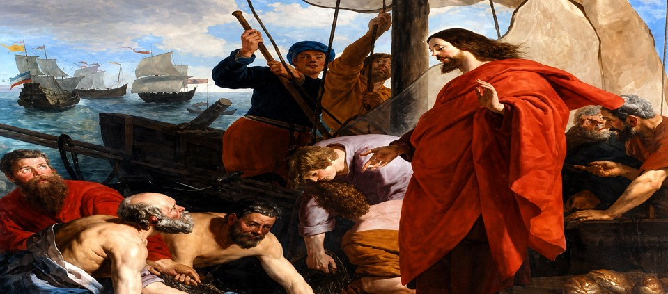

ベッサイダに住んでいたシモンと弟のアンデレは、ガリラヤ湖で魚を取り、それを売って生計を立てていた漁師であった（マタイ4章18節）。ふたりは、ラビのように正式な教育を受けることもなく、「無学な、普通の人」であった（使徒4章13節）。
このシモンもメシアを待望していた多くの人々の中の一人であった。そのころ、バプテスマのヨハネが現れ、ユダヤの荒野で火のように激しいことばで人々に罪の告白と悔い改めを迫る説教をしていた。それを聞いたシモンは感動し弟のアンデレとともにヨハネの弟子になる。このことがその後の人生を全く変えたのである。
イエスとペトロの最初の出会いについては、福音書ごとに異なる視点から記されている。師であるヨハネが、イエスが歩いておられるのを見て「見よ、神の小羊」と言う。それを聞いた二人の弟子がイエスに従った。そのうちの一人はアンデレであり、もう一人は名前が記されていないが、この福音書の著者であるヨハネであると伝統的に考えられている。
アンデレはこの出会いを喜び、兄弟シモン（ペトロ）に知らせる。ヨハネ1章41節には「彼はまず自分の兄弟シモンを見つけて、『私たちはメシア（訳すとキリスト）に出会った』と言った」とあり、さらに42節では「イエスはシモンを見つめて、『あなたはヨハネの子シモンである。あなたをケファ（訳すとペトロ）と呼ぶことにする』と言われた」と記されている。
ここでペトロは新しい名を与えられるが、この段階で直ちにすべてを捨てて従ったとは記されていない。
なお、「ペトロ」とはギリシア語で「岩」を意味し、アラム語（ヘブライ語系）では「ケファ」と言う。これはイエスによって与えられた呼び名であり、後に彼自身の固有名のように用いられるようになった。
黙想※以下は福音書の記述に基づく黙想的再構成である。
それは、静かな始まりだった。
誰かが「見よ、神の小羊」と言った。その言葉は、何気ない一言のようでいて、なぜか心に残った。
アンデレは振り向き、その人を見た。ただの一人の人のはずなのに、目を離すことができなかった。気がつくと、彼はその人の後を歩いていた。理由は分からない。ただ、離れてはいけないと思った。
その日、彼は兄弟のシモンを探し出した。胸の高鳴りを抑えきれずに言った。「私たちはメシアに出会った。」
シモンは半信半疑のまま、その人のもとへ連れて行かれる。そして、その人はシモンを見つめた。ただ見つめただけだった。しかしそのまなざしは、彼のすべてを見通しているかのようだった。
「あなたはシモン。だが、これからはペトロと呼ばれる。」
その言葉は、未来を告げる響きを持っていた。だが、その意味をシモンはまだ理解していなかった。


ルカによる福音書では、イエスがペトロの仕事の現場に来られた場面が描かれている。5章1〜2節には、「イエスはゲネサレト湖のほとりに立ち、岸辺に小舟が二艘あるのをご覧になった。漁師たちは舟から上がって網を洗っていた」とある。
彼らは夜通し働いたにもかかわらず、何も捕れず、失意のうちに後片付けをしていた。その中にペトロもいた。ペトロは家庭を持つ漁師であり、生活を支える責任を負っていた人物である。そのため、仕事を捨ててイエスに従うことは容易な決断ではなかったと考えられる。
イエスはペトロの舟に乗り、少し沖に漕ぎ出させて、そこから群衆に教えられた。話し終えた後、イエスはペトロに「深みに漕ぎ出し、網を降ろして魚を捕りなさい」と言われた。ペトロは「先生、私たちは夜通し苦労しましたが、何も捕れませんでした。しかし、お言葉ですから網を降ろしてみましょう」（5節）と答えた。
常識的には期待できない状況であったが、彼らが従うと、おびただしい魚がかかり、網が破れそうになった（6節）。この出来事により、ペトロはイエスの前にひれ伏し、「主よ、私から離れてください。私は罪深い者です」（8節）と告白した。
するとイエスは、「恐れることはない。今から後、あなたは人間をとる漁師になる」と言われた（10節）。そして彼らは舟を陸に引き上げ、すべてを捨ててイエスに従ったのである（11節）。

マタイおよびマルコによる福音書では、この召命の出来事はより簡潔に記されており、ペトロたちがすぐに従ったように描かれている。これに対してルカやヨハネは、その背景や経過をより詳しく伝えていると理解することができる。
ヨハネによる福音書は、他の三福音書の成立後に書かれたと考えられており、それらをを踏まえつつ、イエスと弟子たちとの出会いを補足的・神学的に深めて記したものと理解することができる。
ペトロの召命については、福音書ごとに異なる描き方がなされている。
マタイおよびマルコによる福音書では、ペトロは、いつものように漁に出たが、イエスはガリラヤ湖のほとりで漁をしていたシモン（ペトロ）とその兄弟アンデレに声をかけ、「わたしについて来なさい。人間をとる漁師にしよう」と言われた。すると彼らはすぐに網を捨てて従ったと簡潔に記されている（マタイ4章、マルコ1章）。
一方、ルカによる福音書では、この召命の出来事に先立って「大漁の奇跡」が語られている。夜通し働いても何も捕れなかったペトロが、イエスの言葉に従って網を降ろしたとき、おびただしい魚が捕れた。この出来事を通してペトロは自らの罪深さを自覚し、「主よ、私から離れてください。私は罪深い者です」と告白する。しかしイエスは、「恐れることはない。今から後、あなたは人間をとる漁師になる」と語り、ペトロを召し出された（ルカ5章）。
黙想このように見ると、ペトロの召命は単なる職業の転換ではなく、自己認識の変化と信仰の目覚めを伴う出来事であったと理解することができる。
なお、ペトロ（生没年不詳〜67年頃とされる）は、イエスの最も重要な弟子の一人であり、十二使徒の中でも中心的な役割を果たした。彼はイエスを「メシア、生ける神の子」と告白した人物として知られている（マタイ16章）。この告白は、後の教会においても重要な意味を持つものとなった。
※以下は福音書の記述に基づく黙想的再構成である。
それからしばらくして――湖の上で、再びその人と出会う。
夕暮れのガリラヤ湖は、静かに赤く染まっていた。沈みゆく太陽が水面を照らし、まるで広い血の海のように揺れている。
ペトロは舟の上にいた。手には仕事道具を持ちながらも、その心はどこか遠くにあった。風が、そっと吹いた。そのとき彼の胸に、不意に言いようのない孤独感が広がった。なぜかは分からない。ただ、自分の人生がこのままでよいのかという問いが、静かに心を満たしていた。
そのときだった。背後から声がした。
夜通し働いても、何も得られなかった朝。疲れと虚しさの中で網を洗っていると、その人が舟に乗り込んできた。振り返ると、一人の人が立っていた。その姿は特別に目立つものではなかったが、なぜか目を離すことができなかった。
「沖に出なさい。」
無意味に思えた。しかし、なぜか断ることができなかった。網を降ろす。すると――水が動き、網が重くなり、信じられないほどの魚がかかった。
その瞬間、ペトロの中で何かが崩れた。誇りも、自信も、経験も。ただ一つ残ったのは、畏れだった。
「主よ、私から離れてください。」
しかし、その人は離れなかった。「恐れることはない。」その言葉は、彼の恐れを包み込んだ。
「シモン、わたしについて来なさい。
「今から後、あなたは人間をとる漁師になる。」
そのまなざしに触れたとき、ペトロの心の奥深くで何かが確かに動いた。その時、ペトロは悟った。この方こそ、自分が求めていた方である――理由は分からないが、そう確信した。ペトロは思わずひれ伏した。「主よ、わたしはふさわしい者ではありません。」
しかし、その人は静かに言われた。「恐れることはない。」その言葉は、不思議な力をもってペトロの内に響いた。責めるのではなく、受け入れる声だった。
「今から後、あなたは人をとる漁師になる。」
ペトロは顔を上げた。湖も、舟も、これまでの生活も、すべてがそこにあった。しかし同時に、まったく新しい道が、自分の前に開かれていることを感じた。彼は立ち上がった。彼は網を置いた。舟を陸に引き上げ離れた。そして――何もかも捨ててイエスに従った。

ペトロは、自分のような罪深い者はイエスの弟子として失格したと早合点して、一生、漁師として生きて行こうと決心していた。ところがイエスは、ペトロに「恐れることはない」（ルカ5章10節）という慰めのことばだけでなく、「人間をとる漁師にしよう」（マタイ4章19節）という弟子として仕えることへの召命のことばをかけてくださった。
イエスのことばを聞いたペトロは、思わず耳を疑ったことでしょう。しかしそれは紛れもない事実であった。ほんとうの弟子になることができるという喜びを胸にこみあげてきたことであろう。それで「何もかも捨てて、イエスに従った」のである（ルカ5章11節）。
こうして「ペトロは、おびただしい魚を網の中に捕えながら、彼自身はキリストの網の中に捕えられたのである。」
